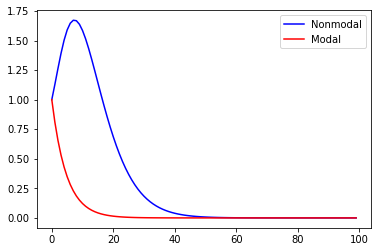
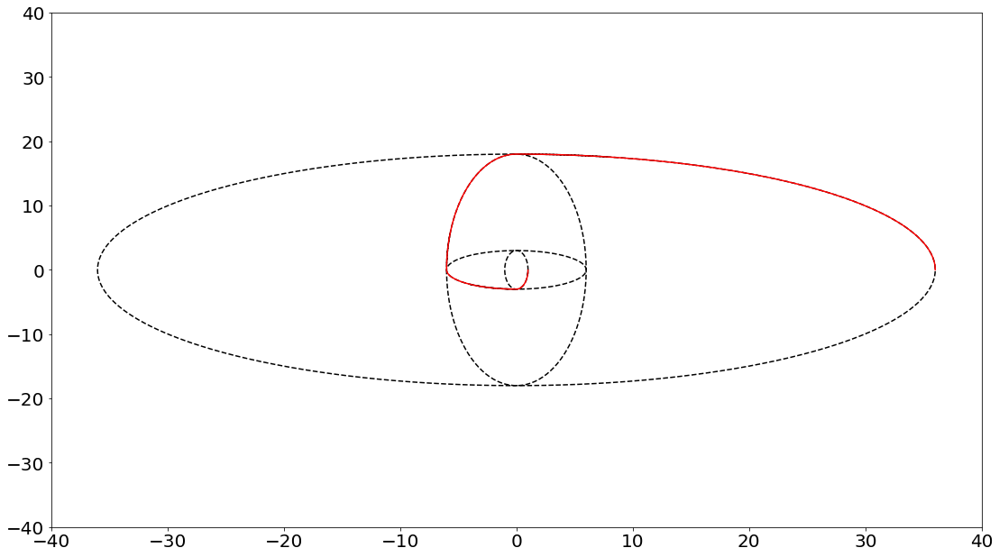

Contents
import numpy as np
import matplotlib.pyplot as plt
from google.colab import drive
drive.mount('/content/gdrive')
---------------------------------------------------------------------------
ModuleNotFoundError Traceback (most recent call last)
Input In [1], in <module>
1 import numpy as np
2 import matplotlib.pyplot as plt
----> 3 from google.colab import drive
4 drive.mount('/content/gdrive')
ModuleNotFoundError: No module named 'google'
#s = np.random.normal(0, 0.1, 1000)
dim = 100
growth1 = np.zeros((dim,1))
growth2 = np.zeros((dim,1))
a = np.array([[0.9,0.3],[0.,0.9]])
x_0 = np.array([[1],[0]])
for tau in range(0,dim):
G_tau = np.linalg.matrix_power(a, tau)
x_tau = np.matmul(G_tau,x_0)
h = np.matmul(np.matrix(G_tau).getH(),G_tau)
w,v = np.linalg.eig(h)
growth1[tau,:] = np.max(w)
growth2[tau,:] = np.matmul(np.transpose(x_tau),x_tau)/np.matmul(np.transpose(x_0),x_0)
plt.figure()
plt.plot(growth1,'b', label='Nonmodal')
plt.plot(growth2,'r', label='Modal')
plt.legend()
plt.savefig("/content/gdrive/MyDrive/Conference/2022_AMS_annual_meeting/optimal_growth.png")

# time-dependent basic states example:
# using RK4 for numerical integration
def f(L,y):
return np.matmul(L,y)
def rk4(L,t0,y0,tn,n):
# Calculating step size
h = (tn-t0)/n
#print('\n--------SOLUTION--------')
#print('-------------------------')
#print('x0\ty0\tyn')
#print('-------------------------')
for i in range(n):
k1 = h * (f(L,y0))
k2 = h * (f(L,(y0+k1/2)))
k3 = h * (f(L,(y0+k2/2)))
k4 = h * (f(L,(y0+k3)))
k = (k1+2*k2+2*k3+k4)/6
yn = y0 + k
#print('%.4f\t%.4f\t%.4f'% (x0,y0,yn) )
#print('-------------------------')
y0 = yn
#print(y0)
t0 = t0+h
return yn
# see Ch5 of Palmer and Hagedorn 2008 for more details: https://www.cambridge.org/core/books/predictability-of-weather-and-climate/9A8E7E0A16BC8BA928243F46ED192FE6
# using RK4 for numerical integration
omega1 = 3
omega2 = 0.5
A1 = np.array([[0,1],[-omega1**2,0]])
A2 = np.array([[0,1],[-omega2**2,0]])
v = np.array([[1],[0]])
record = np.zeros((1000,2))
record[0,:] = np.reshape(v,[2,])
record2 = np.zeros((10,1000,2))
t = 0
count = 0
for i in range(10):
# swapping linear operator for every quarterly period
if (i % 4) == 0:
A=A1
omega=omega1
elif (i % 4) == 1:
A=A2
omega=omega2
elif (i % 4) == 2:
A=A1
omega=omega1
elif (i % 4) == 3:
A=A2
omega=omega2
v_template = v
for j in range(999): # fixed operator
t_index = np.linspace(0,20,1000)
v_new = rk4(A,t_index[j],v_template,t_index[j+1],100)
record2[i,j,:] = np.reshape(v_new,[2,])
v_template = v_new
for j in range(100): # swapping linear operators
t_index = np.linspace(0,np.pi/(2*omega),101)
v_new = rk4(A,t_index[j],v,t_index[j+1],100)
record[count,:] = np.reshape(v_new,[2,])
count = count+1
v = v_new
working A1
working A2
working A3
working A4
working A1
working A2
working A3
working A4
working A1
working A2
fig=plt.figure()
plt.plot(record2[0,0:110,0],record2[0,0:110,1],'k--')
plt.plot(record2[1,0:700,0],record2[1,0:700,1],'k--')
plt.plot(record2[2,0:110,0],record2[2,0:110,1],'k--')
plt.plot(record2[3,0:650,0],record2[3,0:650,1],'k--')
plt.plot(record[0:400,0],record[0:400,1],'r')
plt.xlim([-40,40])
plt.ylim([-40,40])
plt.xticks(fontsize=20)
plt.yticks(fontsize=20)
fig.set_size_inches(18.5, 10.5)
plt.savefig("/content/gdrive/MyDrive/Conference/2022_AMS_annual_meeting/error_growth.png")
